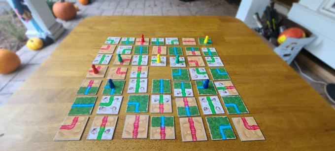

Projects
I've designed board games for over a decade. Here's what's out, what I'm working on now, and earlier designs I'm still proud of.
I've designed board games for over a decade. Here's what's out, what I'm working on now, and earlier designs I'm still proud of.

A pocket-sized solo card game with a new puzzle every day.
Its Kickstarter raised over $29,000 from 1,800+ backers.
“The Daily Weather is going to be a beloved addition to your collection.”
What’s Eric Playing?
Read the case study“If you’re a fan of spatial puzzles, this one is a must-have in my opinion.”
Yogi Bear and Delaware

A family game where players compete for map pieces on an ever-shrinking board to build the best river.
I funded it on Kickstarter and ran production from prototype to manufacturing.
Publishers: ask me about any of these. Get in touch.
In this solo campaign roguelite, uncover the mystery of the minotaur's labyrinth by constructing it yourself.
In this thinky cooperative word-guesser, you can see everyone's word but your own! As a group, assign silly superlatives like “Easiest to Balance on Your Head” or “Best Thing to Have on a Desert Island” in order to deduce your word.
In this trick-taker word-maker, collaborate with your partner to strategically win words, and poison your opponent's supply with nasty letters.
Bridge trolls hate travelers. Invent a secret rule for who may cross your bridge, keep it hard to crack, and be the first to get rid of every traveler.
As park managers planning a food festival, bid with plots of land to recruit food trucks. Bigger plots pick first but leave less room in your park.
Silent social deduction for big groups. Three teams, Good, Evil and Clowns, find each other without a word, checking roles in secret through sealed envelopes.
Build bridges, ladders and farms across floating sky islands, push your luck gathering resources, and earn coins whenever other players use what you built.
A solo push-your-luck brawler in nine cards. Fight hybrid monsters by rolling dice and powering up weapons without losing control.
4th place, most innovative mechanic.
A two-player game in one deck. The Fish rescues schools of fish while the Angler sets traps and cooks what it catches.
3rd place, best two-player game.
Also entered in BoardGameGeek design contests:
More at tian.studio.